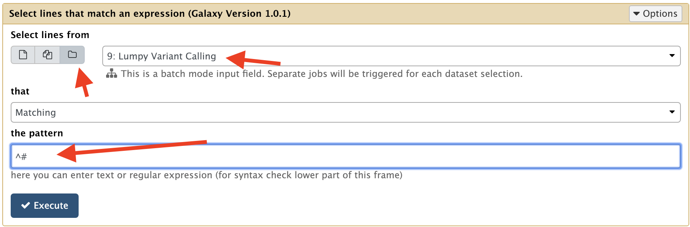
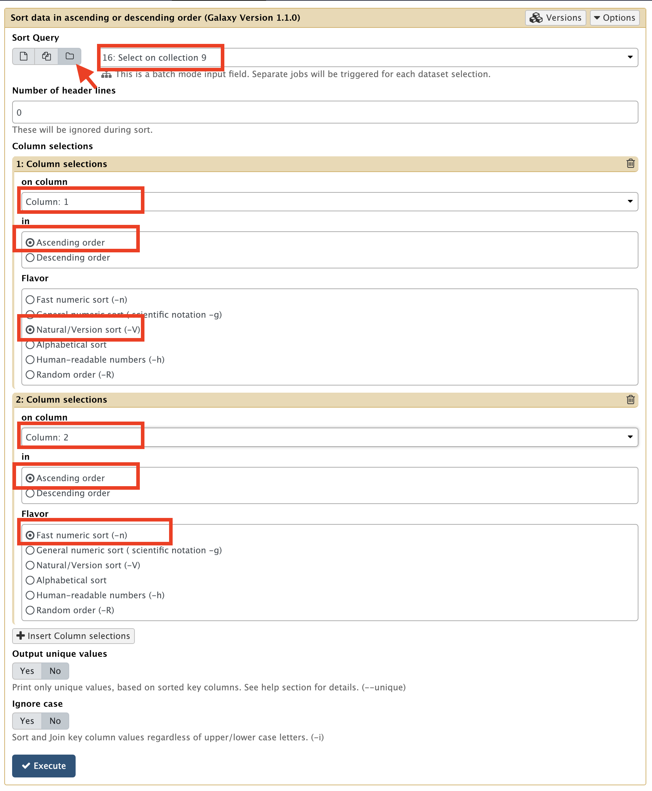

Reformat the vcf output of lumpy-sv
1. Save the header of the vcf
This is just done using the tool Select lines that match an expression (Galaxy Version 1.0.1) with the parameter
Dataset collection- Select lines from:
9: Variant Lumpy Calling - that:
matching - the pattern:
^#

2. Save the rest of the vcf file in another Dataset
Here we use the same Select lines that match an expression tools, this time with the parameters:
- Select lines from:
9: Variant Lumpy Calling - that:
matching - the pattern:
SVTYPE=BND
TIP !
Just re-play the previous tool run, and just change the pattern from ^# to SVTYPE=BND
This allows to kill two birds with the same stone:
- Selecting non-header part of the vcf
- filtering out the variations that are not of type
BND(Bondaries)
3. Reorder the vcf lines in the previous dataset
To do that, we use the tool Sort data in ascending or descending order (Galaxy Version 1.1.0)
- Sort Query:
Dataset collectionand16: Select on collection 9 - Number of header lines:
0 - 1: Column selections
- on column:
Column: 1 - in:
Ascending order - Flavor:
Natural / Version sort (-V)
- on column:
-
2: Column selections
- on column:
Column: 2 - in:
Ascending order - Flavor:
Fast numeric sort (-n)
- on column:
-
Output unique values: No
- Ignore case: No

4. Reassemble the saved header with the sorted/filtered vcf lines
To do that, we use the tool Concatenate datasets tail-to-head (Galaxy Version 1.0.0)
Pay extra attention to the version of the tool, because there is a number of concatenate tools with the same name.
- Concatenate Dataset:
Dataset collectionand14: Select on collection 9 - Click on
+ Insert Datasetto trigger an additional form section - Dataset:
Dataset collectionand18: Sort on collection 16 - 1: Column selections
4. Rename the dataset within the last dataset collection.
Here we will rename the dataset of the last dataset collection. Here, there is something that maybe tricky to understand.
A dataset collection is a kind of dictionary whose elements, the datasets, have as labels the key of this dictionary. However, the real name of this dataset is hidden.
To see the real name of the dataset, navigate in the last collection (click on it) and further click the pencil icone.
Here you can change the real name of the dataset, which is useful for the next step of visualisation in Genome Browser
Rename it as patient A vcf or patient B vcf and click Save